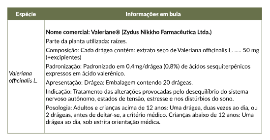

Agora vamos descrever as diferentes apresentações de uso oral. Clique em cada uma das imagens para conhecê-las.

Chá medicinal
A palavra “chá” corresponde especificamente a Camellia sinensis, planta que origina, por exemplo, o chá preto, o chá verde e outros tipos. Logo, recomenda-se utilizar o termo “ preparação extemporânea”, embora popularmente se use muito a expressão “chá”.
A preparação extemporânea é feita a partir da droga vegetal rasurada ou pulverizada por infusão ou decocção, dependendo da rigidez da parte utilizada da planta, bem como da presença de compostos voláteis e outros fatores descritos na monografia da planta a ser utilizada.
É preparada para uso imediato e, em geral, pelo próprio paciente, não exigindo técnicas especializadas para manipulação e administração. Esta preparação deve ser preconizada ao paciente como forma de autocuidado, tanto na prevenção quanto no controle de sua condição de saúde, preferencialmente com orientação por parte dos profissionais de saúde de todas as etapas de elaboração que compõem: a escolha correta da planta, a parte a ser utilizada, a forma correta do preparo e o uso correto.
Pode ser preparada por infusão e decocção, que são definidas pelo Formulário de Fitoterápicos da Farmacopeia Brasileira como:
• Infusão é a preparação que consiste em verter água fervente sobre a droga vegetal e, em seguida,
se aplicável, tampar ou abafar o recipiente por tempo determinado. Método indicado para drogas
vegetais de consistência menos rígida tais como folhas, flores, inflorescências e frutos, ou que
contenham substâncias ativas voláteis.
• Decocção é a preparação que consiste na ebulição da droga vegetal em água potável por tempo
determinado. Método indicado para drogas vegetais com consistência rígida, tais como cascas, raízes,
rizomas, caules, sementes e folhas coriáceas.
• O produto da infusão é o infuso, enquanto o
produto da
decocção é o decocto.
Vantagens da utilização de preparações extemporâneas:
• Estimulam o autocuidado;
• Menor custo do tratamento;
• Melhor adesão ao tratamento, quando o paciente aprecia consumir chás e quando o
sabor é agradável;
• Fácil acesso à droga vegetal, quando é disponibilizada por farmácia.

Desvantagens da utilização de preparações extemporâneas:
• Dose dos bioativos pode ser imprecisa;
• Menor estabilidade: recomenda-se a ingestão no máximo até 24 horas após o preparo;
• Dificuldade no seu preparo em horários e locais que não permitem a sua elaboração;
• Necessitam de orientações precisas e detalhadas, tanto quanto à forma de preparo,
quanto à de utilização, a fim de não prejudicar a saúde do paciente.

Exemplos de prescrição de chá medicinal por infusão e decocção.

Cymbopogon citratus, folha seca rasurada (capim-santo, capim-limão) – droga vegetal
Preparo do chá por infusão: aquecer 150 mL de água até a fervura e desligar o fogo. Adicionar uma colher de sopa caseira rasa da planta seca, tampar e aguardar 5 minutos, depois coar. Tomar os 150 mL, 5 minutos após o preparo, três a quatro vezes ao dia.

Curcuma longa (cúrcuma) – droga vegetal
Preparo do chá por decocção: adicionar meia colher de café caseira dos rizomas secos e rasurados em 150 mL de água. Ferver por 5 minutos e deixar arrefecer (esfriar) em contato com a água durante 15 minutos. Tomar 150 mL, duas ou três vezes ao dia.

Sachê
Os sachês são utilizados com fitoterápicos na forma de droga vegetal rasurada, pulverizada ou extrato seco.
Sachês contendo a droga vegetal pulverizada ou extrato seco são ideais para os pacientes que utilizam drogas vegetais volumosas e/ou possuem dificuldade de deglutição. Também é uma preparação extemporânea, em que o paciente dilui o conteúdo do sachê em água filtrada ou, se preferir, misturada com mel, iogurte, fruta amassada ou suco de frutas.
O sachê contendo droga vegetal rasurada ou pulverizada pode ser imerso em água quente para o preparo de infuso ou decocto, com a vantagem de uniformizar as doses de maneira mais eficiente do que quando se usam medidas caseiras, como colheres. O consumo deve ser imediato após a preparação.
Vantagens da utilização de sachês:
• Permite o acondicionamento de maior volume de droga vegetal;
• Dose mais precisa para o paciente.
Desvantagens da utilização de sachês:
• Pode não mascarar o sabor desagradável, mesmo adicionando o mel;
• Pode causar irritabilidade na garganta e náuseas em pessoas sensíveis;
• Menor tempo de conservação quando contém droga vegetal.
Veja um exemplo de prescrição de sachê:
Exemplo de prescrição de sachê.
Paciente fictício
Uso oral:
Zingiber officinale, rizoma pulverizado (gengibre) 750 mg
Excipiente q.s.p. 1 sachê
Tomar 750 mg (1 sachê) dissolvido em 250 mL de água, meia hora antes da viagem.
Cápsula
É uma forma farmacêutica sólida em que o princípio ativo e os excipientes estão contidos em um invólucro solúvel duro ou mole, de formatos e tamanhos variados, usualmente contendo uma dose única do princípio ativo. A cápsula dura é formada por gelatina, amido e outras substâncias, como opacificantes, corantes e conservantes. Existem também opções de cápsulas veganas, que são feitas a partir de ingredientes vegetais, como hidroxipropilmetilcelulose (HPMC), em vez de ingredientes de origem animal, como a gelatina.
As cápsulas possuem duas seções cilíndricas pré-fabricadas (corpo e tampa) que se encaixam, e as extremidades são arredondadas. O tamanho das cápsulas pode variar, como demonstrado na Tabela.
Capacidade teórica de acondicionamento de pó pela cápsula gelatinosa.

Fonte: Pereira et al., 2020 adaptado de Prista, 2011.
A cápsula é indicada para fitoterápicos na forma de droga vegetal pulverizada e derivado vegetal. Profissionais podem preferir prescrever cápsulas contendo extrato seco ou droga vegetal, considerando as vantagens e desvantagens de cada um e a experiência do próprio profissional. Recomenda-se, sempre que possível, que o extrato seco ou a droga vegetal possuam conteúdo definido de constituintes (marcadores) responsáveis pela atividade terapêutica e/ou que caracterizam quimicamente a espécie vegetal. A capacidade de acondicionamento da cápsula depende da densidade da droga vegetal pulverizada ou do derivado vegetal a ser encapsulado.
Outro tipo de cápsula é a mole (softgel), que é constituída de um invólucro de gelatina em vários formatos, mais maleável do que o das cápsulas duras. Normalmente, são preenchidas com conteúdo líquido, como óleo.
Vantagens da utilização de cápsulas:
• Dose mais precisa para o paciente, em comparação com as preparações extemporâneas que
utilizam medidas caseiras;
• Mascara o sabor e o odor desagradável dos fitoterápicos;
• Apresenta boa estabilidade físico-química;
• Facilidade de armazenar e transportar;
• Melhora a adesão do paciente ao tratamento.
Desvantagens da utilização de cápsulas:
• Restrição de uso em pacientes com dificuldade de deglutição, idosos e crianças;
• Drogas vegetais pulverizadas ou extratos com baixa densidade podem resultar em um
maior número de cápsulas a serem ingeridas em cada dose, o que pode causar desconforto
gástrico em alguns pacientes.
Densidade: densidade de massa (r) de uma substância é a razão de sua massa por seu volume a 20 ˚C (Brasil, 2024).
Exemplo de prescrição de cápsula.
Paciente fictício
Uso oral:
Curcuma longa, rizoma pulverizado (cúrcuma, açafrão-da-terra) 350 mg
Excipiente q.s.p. 1 cápsula*
Tomar 1 cápsula, uma ou duas vezes ao dia.
*Usualmente, é prescrito desta forma. No entanto, pode-se escrever “1 dose”, pois, devido à densidade e ao volume da droga vegetal ou do extrato, pode ser que a manipulação dobre ou triplique o número de cápsulas por dose para corresponder à quantidade prescrita.
Comprimidos
Segundo a Farmacopeia Brasileira, os comprimidos são definidos como a forma farmacêutica sólida contendo uma dose única de um ou mais princípios ativos, com ou sem excipientes, obtida pela compressão de volumes uniformes de partículas.
Vantagens da utilização de comprimidos:
• Boa estabilidade físico-química;
• Boa precisão na dosagem;
• Fácil administração e fácil manuseio.
Desvantagens da utilização de comprimidos:
• Restrição de uso em pacientes com dificuldade de deglutição, idosos e crianças;
• Dificuldade de fracionar a dose do produto final;
• A tecnologia nem sempre está disponível em farmácias vivas ou com manipulação,
restringindo-se aos produtos industrializados.
Os comprimidos podem ser apresentados em diversos tamanhos e formatos com marcações na superfície, além de serem ou não revestidos. Também podem ser classificados quanto ao tipo de liberação, imediata ou modificada. A seguir, vamos ver as diferenças de cada um:
• Liberação imediata: não possuem revestimento; após ingeridos liberam o fármaco em um espaço relativamente curto de tempo, por desintegração e dissolução, com ação iniciada rapidamente. Geralmente são utilizados excipientes hidrossolúveis e/ou desagregantes, pois estes aumentam a velocidade de liberação do fármaco.
• Liberação modificada: Possuem tempo de liberação diferente da imediata, pois recebe um revestimento capaz de controlar a liberação do fármaco.
Comprimido revestido
Possui uma ou mais camadas finas de revestimento, normalmente, poliméricas, destinadas a proteger o fármaco do ar ou da umidade, mascarar odor e sabor desagradáveis, melhorar a aparência dos comprimidos ou conferir alguma outra propriedade que não seja a de alterar a velocidade ou extensão da liberação do princípio ativo. A forma farmacêutica comprimido é pouco comum nas farmácias magistrais, sendo mais utilizada pela indústria farmacêutica.
A seguir, são apresentados dois exemplos de medicamentos fitoterápicos industrializados com apresentação em comprimido revestido.
Exemplos de fitoterápicos industrializados na forma de comprimido revestido.

Fonte: Informações em bula dos produtos correspondentes.
Drágeas
São comprimidos revestidos com camadas constituídas por misturas de substâncias diversas, como resinas, naturais ou sintéticas, gomas, gelatinas, materiais inativos e insolúveis, açúcares, plastificantes, polióis, ceras, corantes autorizados e, às vezes, aromatizantes e princípios ativos. A forma farmacêutica drágea é pouco comum nas farmácias magistrais, sendo mais utilizada pela indústria farmacêutica.
Vantagens da utilização das drágeas:
• Boa estabilidade físico-química;
• Facilidade na administração;
• Proteção de princípios ativos facilmente oxidáveis;
• Viabilização da desintegração entérica.
Desvantagens da utilização das drágeas:
• Preparação que exige alta tecnicidade;
• Alto custo do preparo;
• Impossibilidade de ajuste de dose;
• É pouco comum nas farmácias com manipulação, sendo mais utilizada pela indústria
farmacêutica.
A seguir, um exemplo de medicamento fitoterápico industrializado com apresentação em drágeas.
Exemplo de fitoterápico industrializado na forma de drágeas.

Fonte: Informações em bula dos produtos correspondentes.
Tintura e alcoolatura
São preparações líquidas que devem ser diluídas em água, antes de serem ingeridas, devido ao elevado teor alcoólico. Por esse motivo, muitas publicações recomendam cautela ao prescrever para crianças, idosos, alcoolistas e diabéticos, ficando a critério do prescritor a avaliação de sua prescrição.
As tinturas e alcoolaturas podem ser prescritas como monodroga (de apenas uma espécie vegetal) ou na forma de composto (mistura de mais de uma espécie vegetal).
As tinturas e alcoolaturas também podem ser adicionadas a xarope ou solução oral. A mesma preparação, quando indicada ao uso externo, pode ser incorporada em formas semissólidas como creme, loção, gel e pomada.

Recomende ao seu paciente não operar equipamentos, máquinas ou dirigir após a ingestão do fitoterápico em forma de tintura.
Vantagens da utilização de tintura e alcoolatura:
• Indicação para pacientes com dificuldade de deglutição;
• Absorção mais rápida, comparada às formas sólidas;
• Facilidade no fracionamento da dose.
Desvantagens da utilização de tintura e alcoolatura:
• Alto teor alcooólico;
• Sabor pode ser desagradável.
Exemplo de prescrição de tintura.
Paciente fictício
Uso oral:
Tintura de Achillea millefolium, parte aérea (mil-folhas) (RDE 1:10, etanol 70%) 100 mL
Tomar de 3 a 10 mL* da tintura por dia, diluídos em água, divididos em três doses.
*A dose aqui apresentada é uma faixa terapêutica. O valor exato para cada paciente deve ser informado na prescrição.
Xarope e melito
São soluções orais caracterizadas pela alta viscosidade, conferida pela presença de sacarose ou outros açúcares, agentes espessantes e edulcorantes na sua composição. Os xaropes também podem conter agentes flavorizantes e conservantes.
A preparação do xarope simples é feita com água destilada e sacarose, em seguida, podem ser adicionados: tinturas, extratos fluidos e/ou secos solúveis.
A preparação do melito é realizada com mel, logo depois, podem ser incorporadas as tinturas, os extratos fluidos e/ou secos solúveis.
Recomenda-se utilizar o xarope com solução de sorbitol ou carboximetilcelulose, em caso de pacientes diabéticos.
Vantagens da utilização de xarope/melito:
• Absorção mais rápida, comparada com as formas sólidas;
• Sabor geralmente agradável, sendo bem aceito por crianças;
• Fácil deglutição;
• Permite fracionamento da dose.
Desvantagens da utilização de xarope/melito:
• Menor estabilidade físico-química;
• Pode haver dificuldade em mascarar o sabor desagradável de algumas plantas;
• Não são recomendados para diabéticos;
• Não são adequados para uso prolongado, devido ao conteúdo de açúcar.
Exemplo de prescrição de xarope com incorporação de tintura.
Paciente fictício
Uso oral:
Tintura de Mikania laevigata, folha (guaco) (RDE 1:5, etanol 70%) 10 mL
Xarope simples q.s.p. 100 mL
Tomar 15 mL, 3 vezes ao dia, durante 7 dias.
Exemplo de prescrição de xarope com incorporação de extrato seco.
Paciente fictício
Uso oral:
Extrato seco de Vaccinium macrocarpon, fruto (cranberry) 400 mg
Xarope simples q.s.p. 5 mL
Preparar 30 doses (150 mL) em um frasco.
Tomar 5 mL, 2 vezes ao dia, durante 30 dias.
Antes da manipulação, o farmacêutico deverá observar a solubilidade do extrato seco, certificando-se de que ele é solúvel.
Preparação extemporânea: é a preparação para uso imediato, ou de acordo com o descrito na monografia específica, a ser realizada pelo paciente (Brasil, 2021).